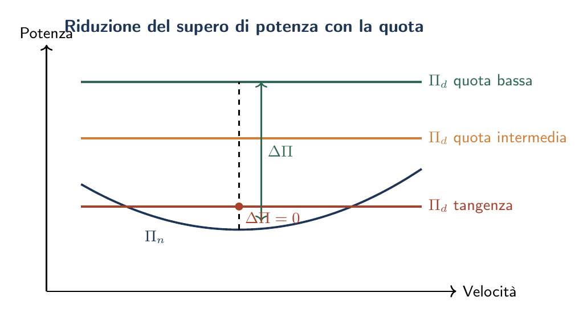

Esame di Stato 2024
UAV elettrico · Quota di tangenza · Strumentazione di bordo · Sicurezza in cabina
La prova della sessione ordinaria 2024 ruota attorno a un velivolo UAV a propulsione elettrica (MTOW = 25 kg, $S = 2{,}5\,\mathrm{m}^2$, $\AR = 6{,}4$, profilo NACA 4412). La seconda parte propone quattro quesiti a risposta aperta, dei quali il candidato deve sceglierne due. Nei paragrafi seguenti viene fornita una risposta completa a ciascun quesito; le risposte ai quesiti 1 e 2 si raccordano direttamente con i risultati della Prima Parte.
Utilità, potenzialità e limiti del velivolo UAV
Utilità e applicazioni operative
Il velivolo UAV da 25 kg con propulsione elettrica trova impiego in numerosi settori civili e professionali.
Monitoraggio ambientale e rilievo topografico: ispezione di infrastrutture (tralicci, ponti, oleodotti, gasdotti), fotogrammetria aerea per ortofoto e modelli 3D, monitoraggio di incendi boschivi, analisi di colture agricole con sensori multispettrali (precision farming), controllo costiero e fluviale.
Sicurezza e protezione civile: ricerca e soccorso (SAR) con sensori termici IR, sorveglianza di aree vaste, supporto operativo a forze dell'ordine, gestione post-calamità (mappatura rapida di zone alluvionate o danneggiate da eventi sismici).
Cinematografia e broadcasting: riprese aeree per produzioni audiovisive, copertura di eventi sportivi, ispezioni in ambienti confinati (capannoni, silos) con telecamere ad alta risoluzione.
Logistica in aree disagiate: trasporto di farmaci, kit di pronto soccorso o piccoli dispositivi medici verso comunità remote o montane non raggiungibili agevolmente via terra.
Potenzialità
- Costi operativi ridotti: l'assenza di equipaggio elimina i costi di personale; la propulsione elettrica abbatte i costi di carburante e riduce la manutenzione del gruppo propulsivo rispetto ai motori a pistoni.
- Accesso a zone pericolose o inaccessibili: l'UAV può operare in ambienti tossici, irradiati o ad alto rischio senza mettere in pericolo operatori umani.
- Emissioni zero in volo: la propulsione elettrica non produce emissioni locali di $\mathrm{CO_2}$ né inquinanti atmosferici durante il volo; vantaggio rilevante nelle operazioni in aree urbane o protette.
- Silenziosità: un motore brushless con elica a basso numero di giri produce livelli di rumore nettamente inferiori rispetto ad un motore a pistone equivalente; questo amplia le finestre operative (orari notturni, zone residenziali).
- Agilità di schieramento: decollo e atterraggio non richiedono pista dedicata; i tempi di allestimento sul campo sono dell'ordine di pochi minuti.
Limiti
- Autonomia limitata dalla densità energetica delle batterie: con $C_{\mathrm{bat}} = 140\,\mathrm{Wh/kg}$ l'autonomia chilometrica è dell'ordine di 80 km e quella oraria di circa 100 min; ben al di sotto dei velivoli a combustione interna (avgas: $\sim 12\,000\,\mathrm{Wh/kg}$).
- Sensibilità alle condizioni meteorologiche: vento frontale prossimo a $V_{MD} \approx 55\,\mathrm{km/h}$ riduce drasticamente l'autonomia chilometrica; pioggia e ghiaccio degradano le prestazioni aerodinamiche e danneggiano l'elettronica di bordo.
- Quadro normativo restrittivo: il Regolamento EASA UE 2019/947 impone limitazioni operative stringenti. Il volo BVLOS (Beyond Visual Line Of Sight) richiede autorizzazioni specifiche; esistono zone di esclusione permanente (aeroporti, aree urbane ad alta densità, spazio aereo controllato CTR/TMA).
- Vulnerabilità elettronica: rischio di perdita di controllo per jamming del segnale radio o GPS spoofing; in caso di interruzione del link di comando il velivolo deve disporre di una procedura di failsafe (RTH, Return To Home).
- Payload limitato: con MTOW = 25 kg e batteria al 30% del peso, il carico utile disponibile è dell'ordine di 5–8 kg, insufficiente per applicazioni che richiedono sensori pesanti o carichi di massa significativa.
Quota di tangenza: definizione e dipendenza dalle caratteristiche del velivolo
Analisi fisica: variazione delle potenze con la quota
La potenza necessaria al volo livellato vale: $$\Pi_n = \frac{W}{E} \cdot V = W^{3/2} \sqrt{\frac{2}{\rho_z S}} \cdot \frac{C_D}{C_L^{3/2}} \label{eq:Pn_quota}$$ Con il diminuire della densità $\rho_z$ al crescere della quota, la curva $\Pi_n(V)$ si sposta verso l'alto e verso destra: a parità di $C_L$ serve una velocità maggiore (l'aria è più rarefatta) e quindi la potenza cresce. In termini di densità relativa $\delta = \rho_z/\rho_0$: $$\Pi_{n,z} = \frac{\Pi_{n,0}}{\sqrt{\delta}} \label{eq:Pn_scala}$$ La potenza disponibile $\Pi_d$ decade invece con la quota:
- Motoelica (motore a pistone): $\Pi_d(z) \approx \Pi_0 \cdot \delta$, degrado lineare con la densità (il motore "respira" meno aria).
- Turbogetto: la spinta $T_d$ è quasi costante, quindi $\Pi_d = T_d \cdot V \propto 1/\sqrt{\delta}$, degrado molto più lento.
- Motore elettrico (come nell'UAV della traccia): la potenza disponibile non dipende dalla densità dell'aria ($\Pi_d \approx \Pi_{d,0} = \mathrm{cost}$); solo $\Pi_n$ varia con la quota.
Il supero di potenza $\Delta\Pi = \Pi_d - \Pi_n$ si riduce all'aumentare della quota. Quando $\Delta\Pi = 0$ si raggiunge la tangenza assoluta.

Dipendenza dalle caratteristiche del velivolo
Rapporto potenza/peso $\Pi_d/W$.
È il parametro più direttamente influente: un supero iniziale $\Delta\Pi_0$ elevato si esaurisce più lentamente con la quota. Velivoli sportivi o militari con alto $\Pi_d/W$ raggiungono tangenze molto superiori a quelle degli addestratori o dei velivoli da turismo.Efficienza aerodinamica massima $E_{\max}$.
Dalla (eq:Pn_quota), la potenza necessaria è $\Pi_n = WV/E$; aumentando $E_{\max}$ (profilo più efficiente, allungamento maggiore, resistenza parassita ridotta) $\Pi_n$ diminuisce e il supero cresce. Ricordando che: $$E_{\max} = \frac{1}{2}\sqrt{\frac{\pi\,\AR\,e}{C_{D0}}}$$ la tangenza beneficia di: allungamento alare $\AR$ elevato, resistenza parassita $C_{D0}$ ridotta, fattore di Oswald $e$ prossimo a 1.Carico alare $W/S$.
Un carico alare elevato impone velocità operative più alte; poiché $\Pi_n \propto V^3$ ad alto regime, la potenza necessaria cresce. A parità di propulsione, un'ala più grande ($W/S$ minore) favorisce la tangenza — a discapito però della velocità di crociera.Legge di degrado della potenza disponibile.
Il motore elettrico (caso dell'UAV in esame) non "respira" aria: la sua potenza è quasi indipendente dalla quota. Ne consegue che la tangenza è governata esclusivamente dalla crescita di $\Pi_n$ con la quota, e risulta notevolmente superiore rispetto ad una motoelica con pari rapporto $\Pi_d/W$ a livello del mare.Principale strumentazione di bordo di un velivolo
Strumenti di volo (flight instruments
)Nel cruscotto analogico tradizionale gli strumenti di volo sono disposti secondo la "T di base" (Basic-T): anemometro in alto a sinistra, altimetro in alto a destra, orizzonte artificiale al centro, indicatore di virata e sbandamento in basso a sinistra, variometro in basso a destra, girobussola in basso al centro.
Anemometro (Airspeed Indicator, ASI).
Misura la velocità indicata IAS (Indicated Airspeed) sfruttando la differenza tra pressione totale (tubo di Pitot) e pressione statica (presa statica): $$v_{\mathrm{IAS}} = \sqrt{\dfrac{2\,(p_t - p_s)}{\rho_0}}$$ Il quadrante riporta settori colorati: arco verde (velocità normali), arco giallo (cautela, solo volo liscio), linea rossa ($V_{NE}$, velocità mai da superare), arco bianco (intervallo con ipersostentatori estesi).Altimetro.
Misura la quota barometrica dalla variazione di pressione statica rispetto a una pressione di riferimento (QNH, QFE o 1013,25 hPa per la quota standard). Tre lancette indicano migliaia, centinaia e decine di piedi (o di metri). Non è uno strumento inerziale: misura la pressione, non la quota geometrica.Orizzonte artificiale (Attitude Indicator, AI).
Visualizza l'assetto del velivolo: angolo di rollio $\phi$ e di beccheggio $\theta$ rispetto all'orizzonte. Si basa su un giroscopio a tre assi mantenuto verticale; nei sistemi moderni è realizzato con unità AHRS (Attitude and Heading Reference System) che integrano sensori MEMS e dati GPS. È lo strumento più critico in volo strumentale: una sua avaria improvvisa in IMC (Instrument Meteorological Conditions) è potenzialmente fatale se il pilota non è addestrato al volo con strumenti di riserva.Indicatore di virata e sbandamento (Turn and Slip Indicator).
Misura la velocità angolare di imbardata $\dot\psi$ tramite un giroscopio a tasso (rate gyro) e il coordinamento della virata tramite una bolla livello. È il principale strumento di riserva in caso di avaria dell'orizzonte artificiale.Variometro (Vertical Speed Indicator, VSI).
Indica la velocità verticale $\dot{h}$ in m/s o ft/min, derivata dalla variazione nel tempo della pressione statica. Ha un ritardo strumentale intrinseco di $\sim 5\,\mathrm{s}$, eliminato nei modelli IVSI (Instantaneous VSI) con una camera di accelerazione.Girobussola (Direction Indicator, DI).
Indica la prua mediante un giroscopio orizzontatale. Accumula errori di precessione apparente ($\sim 15\,{}^{\circ}/\mathrm{h}$) e deve essere periodicamente riallineato con la bussola magnetica.Strumenti di navigazione
Bussola magnetica.
Orientamento rispetto al campo magnetico terrestre. Soggetta a errori di deviazione (disturbi magnetici del velivolo) e variazione (differenza Nord magnetico / Nord vero). In accelerazione e virata introduce errori sistematici (effetto pendolazione).VOR / DME.
Il VOR (VHF Omnidirectional Range) fornisce la radiale rispetto alla stazione radio al suolo (accuratezza $\pm 1{,}4{}^{\circ}$). Il DME (Distance Measuring Equipment) misura la distanza obliqua (slant range) dalla stazione per triangolazione temporale degli impulsi radio.ILS (Instrument Landing System).
Sistema di avvicinamento di precisione composto da: localizer (guida laterale, VHF 108–112 MHz) e glide slope (guida verticale, UHF 329–335 MHz), con il marker esterno, intermedio e interno per la verifica di quota. Classifica Cat. I (RVR $\ge 550\,\mathrm{m}$), Cat. II e Cat. III (fino ad autoland).GPS / GNSS.
Fornisce posizione 3D, velocità rispetto al suolo e tempo con precisione $\le 3\,\mathrm{m}$ (SBAS). Non è influenzato da vento né campi magnetici; vulnerabile a jamming e spoofing. Integrato con sistemi inerziali INS/IRS nei velivoli di linea (navigazione ibrida GPS/INS).Transponder (SSR / ADS-B).
Risponde alle interrogazioni radar secondario (SSR) trasmettendo codice ICAO e quota. I transponder Modo-S e ADS-B (Automatic Dependent Surveillance-Broadcast) diffondono identità, posizione GPS e velocità a tutti i ricevitori nel raggio utile; sono obbligatori in spazio aereo controllato dal 2023 (Reg. UE 2020/587).Strumenti di motore e impianti
Includono: indicatori di regime (RPM per motore a pistone; $N_1$, $N_2$ per turbomotori), pressione di alimentazione carburante, temperatura testata cilindri (CHT) e gas di scarico (EGT) per motori a pistone, temperatura della sezione calda (ITT/TGT) per turbomotori, amperometri e voltmetri dell'impianto elettrico, manometri dell'impianto idraulico, indicatori dello stato del carrello.
Il glass cockpit
Nei velivoli moderni (e negli UAV a controllo remoto) gli strumenti analogici sono sostituiti da display multifunzione digitali:
- PFD (Primary Flight Display): replica elettronica della T di base — orizzonte artificiale, velocità, quota, variometro, prua — in un'unica schermata grafica ad alta risoluzione.
- MFD (Multi Function Display): carta di navigazione, dati motore, meteo radar, TCAS, FMS.
Sicurezza del trasporto aereo e benessere dei passeggeri
Pressurizzazione della cabina
Perché pressurizzare.
Alle quote di crociera tipiche ($10\,000$–$12\,000\,\mathrm{m}$) la pressione atmosferica scende a circa $\frac{1}{4}$ del valore al suolo ($\sim 25\,\mathrm{kPa}$ contro $101\,\mathrm{kPa}$), rendendo la pressione parziale di ossigeno insufficiente alla sopravvivenza senza maschera. La cabina viene pertanto mantenuta a una pressione corrispondente a una "quota cabina" di circa $2400\,\mathrm{m}$ ($\sim 75\,\mathrm{kPa}$), valore stabilito dalla CS-25 e dall'IATA come compromesso tra comfort fisiologico e resistenza strutturale della fusoliera.Pressione differenziale strutturale.
La differenza di pressione interno/esterno genera una sollecitazione di trazione sulla fusoliera (guscio cilindrico sotto pressione interna, con tensione circonferenziale $\sigma_\theta = \Delta p \cdot r / t$). Per i velivoli di linea: $$\Delta p = p_{\mathrm{cab}} - p_{\mathrm{ext}} \approx 75 - 20 = 55\,\mathrm{kPa} \quad (\approx 8\,\mathrm{psi})$$ La struttura è dimensionata su questo valore con $k = 1{,}5$ (CS-25.305). Valvole di sovrapressione impediscono $\Delta p$ eccessivi; valvole anti-vuoto evitano che in discesa rapida la pressione interna scenda sotto quella esterna.Impianto di condizionamento e pressurizzazione.
L'aria fresca è prelevata come bleed air dai compressori del turbofan, raffreddata nel pacchetto ACM (Air Cycle Machine — ciclo aria bootstrap), filtrata con filtri HEPA e immessa in cabina. La portata è regolata per garantire un ricambio d'aria continuo ($\ge 0{,}25\,\mathrm{kg/min}$ per passeggero, IATA) e mantenere la $\mathrm{CO_2}$ al di sotto di $0{,}5\%$ in volume.Temperatura e umidità
La temperatura di cabina è mantenuta nel range $18$–$24\,{}^{\circ}\mathrm{C}$. L'umidità relativa scende tipicamente al 5–15% su voli lunghi (l'aria ad alta quota è estremamente secca): causa irritazione delle mucose e degli occhi, affaticamento e disidratazione. I velivoli di nuova generazione in composito (es.\ Boeing 787) tollerano un'umidità del 15–16% (le strutture metalliche limiterebbero l'umidità per rischio di corrosione).
Ossigeno di emergenza
In caso di depressurizzazione rapida, le maschere a ossigeno si aprono automaticamente quando la quota cabina supera $14\,000\,\mathrm{ft}$ ($\approx 4300\,\mathrm{m}$). Forniscono ossigeno da generatori chimici (perclorato di sodio, $\ge 12\,\mathrm{min}$) o da bombole centralizzate per un tempo sufficiente alla discesa di emergenza a quota sicura ($< 10\,000\,\mathrm{ft}$). I piloti dispongono di maschere a pressione positiva con autonomia di almeno 15 min (CS-25.1443).
Sistemi di ritenuta e poltroncine
Le poltroncine sono certificate secondo CS-25.785 e devono resistere senza cedimento strutturale a un'accelerazione frontale di $16\,g$ (crash pulse di $0{,}1\,\mathrm{s}$, impulso triangolare). Le cinture di sicurezza a tre punti sono obbligatorie; durante le fasi critiche (decollo, atterraggio, turbolenza) la cintura deve essere allacciata. I corridoi devono rimanere percorribili dopo una deformazione residua del piano cabina.
Uscite di emergenza e evacuazione
La CS-25.807 prescrive che tutti i passeggeri debbano poter evacuare il velivolo in 90 secondi con la metà delle uscite bloccate, in condizioni di illuminazione notturna simulata. Il numero, tipo (A, B, C, I, II, III, IV) e posizione delle uscite sono determinati in funzione della capacità massima del velivolo. Le uscite devono essere apribili dall'interno e dall'esterno; i meccanismi non devono richiedere più di $67\,\mathrm{N}$ di forza di apertura.
Materiali ignifughi e fumi
Tutti i materiali della cabina (rivestimenti, moquette, sedili, soffitti, cuscini) devono superare le prove di CS-25 Appendix F:
- Prova di propagazione della fiamma verticale (60 s di esposizione);
- Prova di heat release rate: massimo $65\,\mathrm{kW/m^2}$ picco e $65\,\mathrm{kW{\cdot}min/m^2}$ integrale nei primi 2 min (OSU calorimeter);
- Prova di opacità dei fumi: trasmittanza luminosa $\ge 0{,}15$ dopo 4 min.
Illuminazione di emergenza e segnaletica
L'impianto di illuminazione di emergenza (strisce a pavimento, insegne EXIT illuminate) deve funzionare per almeno 10 min a bordo completamente privo di alimentazione principale (batterie dedicate). Le strisce a pavimento guidano i passeggeri verso le uscite anche in caso di fumo denso in cabina (visibilità ridotta a pochi centimetri di altezza).